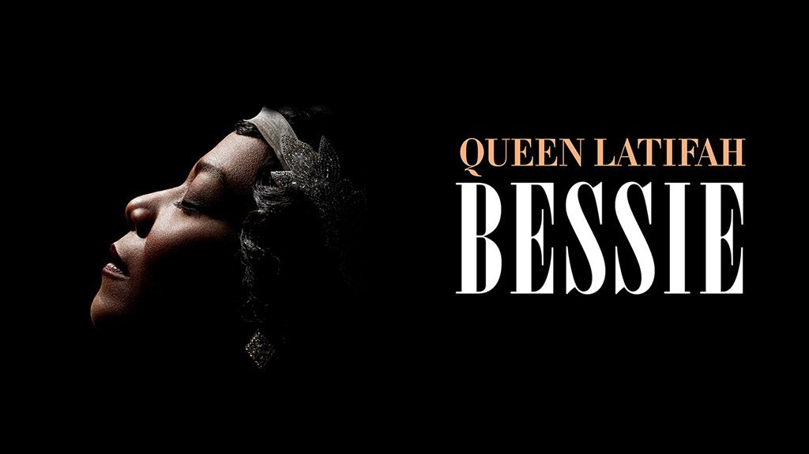
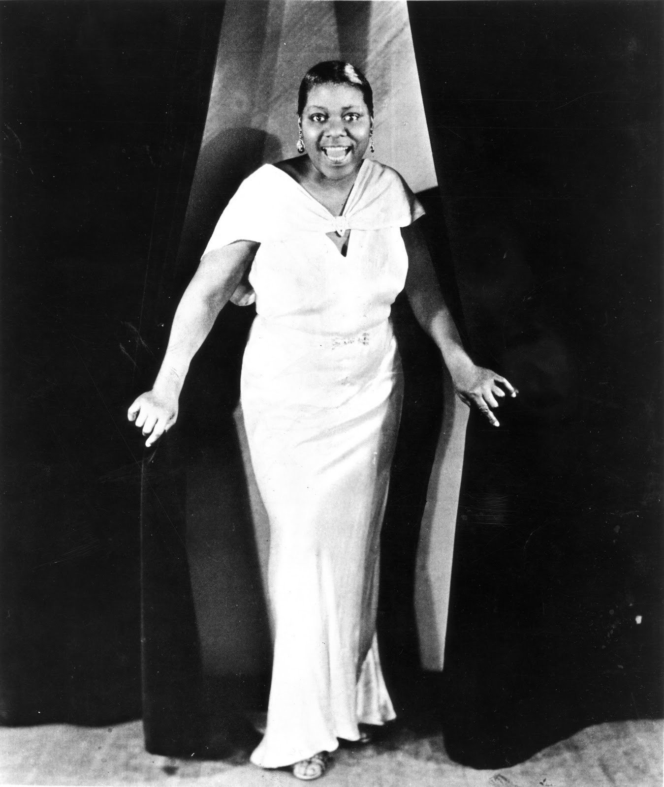

بقلم إسماعيل فايد

بيسي سميث (1894-1939)، إمبراطورة البلوز
يبدأ فيلم Bessie (٢٠١٥) بمشهد تحاول فيه Bessie Smith أن تتذكر شكل والدتها، ولكنها لا تستطيع، وترتبط محاولات تذكر والدتها بفاجعة من نوعا ما لا نعلم ما هي. تصبح تلك أحد أهم ثيمات الفيلم، ولعلها تكون أيضاً أشهر مغالطاته. فـبيسي المولودة عام ١٨٩٤ توفّيت والدتها عندما كانت في الثامنة من عمرها، ويصعب على المشاهد تقبل فكرة أن طفلة ذات ثمان أعوام لا تتذكر والدتها على الإطلاق. ولعل تلك الإشكالية هي التي تحكم فيلم Bessie ومحاولته تقديم قصة حياتها في شكل درامي. فماذا يعني أن تقوم مغنية زنجية (Queen Latifah) بتقديم حياة مغنية زنجية أخرى (Bessie Smith) وإعادة صياغة تلك السيرة بشكل محدد يُغيّر من معالم تلك القصة والظرف التاريخي والاقتصادي والاجتماعي الذي نشأت فيه من ناحية، وفي نفس الوقت يُدخل مَشاهد وقصص درامية خيالية تُربك المُشاهد والقصة بأكملها، فتصبح سلسلة غير متصلة من المواقف والمشاهد التي تفتقد للتعقيد والعمق في حياة بيسي.
بيسي سميث ١٨٩٤-١٩٣٩ هي أهم مغنيات البلوز قاطبة وأكثرهم شهرة وتأثيراً(1) وتُمثل مرحلة أساسية في تطور الموسيقى الأفرو–أمريكية في بدايات القرن العشرين. جسّدت بيسي خبرات التحرر من العبودية، وصعود الزنوج كطبقة مدينية متوسطة تقبل موسيقى السود وتسليعها، وأثر الظروف الاجتماعية والاقتصادية على فكرة الذوق والاستهلاك، خاصة خلال الكساد العظيم الذي بدأ سنة ١٩٢٩.
ما بعد التحرر وتشكّل المجتمع الأفرو–أمريكي
يقترح هوبزبوم(2) أن أحد أسباب الحرب الأهلية الأمريكية ١٨٦١-١٨٦٥ هو اعتماد الجنوب على اقتصاد العبودية الذي لا يمكنه مواكبة التصنيع كما في الشمال (ربط الأيدي العاملة بالأرض وبالزراعة كطريقة للإنتاج)(3). وعلى اختلاف أسباب الحرب، كانت أهم نتائجها هو إعادة إعمار ولايات الجنوب (١٨٦٥ -١٨٧٧) وبداية انتشار التصنيع وما صاحبه ذلك من هجرات واسعة وكبيرة من الزنوج من الأجزاء الريفية الزراعية في ولايات الجنوب إلى المراكز الصناعية الجديدة في المدن.
صاحَب تلك الفترة مجموعة من الإصلاحات التي ساهمت في تشكيل نواة للمجتمع الأفرو–أمريكي بشكل أساسي (حرية التحرك والسفر – التعليم – حق امتلاك الأرض والتجارة) واستمرت تلك الحالة من الانفتاح الذي ساهم بشكل كبير في جعل إدماج الزنوج كفصيل أساسي في المجتمع الحضري المديني أمراً تدريجياً ولكن حتمياً. وفي ظل تلك السيولة وإعادة تشكيل مجتمع الزنوج بعد التحرر وإعادة الإعمار ولدت بيسي، في نهايات ثمانينات القرن التاسع عشر، لأب وأم هاجروا من ألاباما ليستقروا في شاتنوجا(4) في ولاية تينسي. عمل والد بيسي في مصنع وعملت والدتها في التنظيف، وتمتعت هي ببعض مزايا فترة إعادة الإعمار والتصنيع، بداية من دخولها المدرسة وحصولها على التعليم الأساسي، وإلى تعرفها على أشكال المسرح والفرق الغنائية والاستعراضية التي تطورت كأحد أهم وسائل الترفيه لمجتمعات المدن في شكلها الرأسمالي–الصناعي الجديد(5).
ورغم ظهور قوانين التمييز العنصري(6) في ١٨٩٠ والتي كرست لأشكال عديدة من التفرقة والقمع للمجتمعات الأفرو–أمريكية، إلا أن تجذر وصعود المجتمع الزنجي كان قد أخذ في التشكل، وجاءت تلك القوانين لتعيد أنماط التمييز والقمع ولكن بأشكال أكثر تعقيدا، وفي بعض الأحيان أكثر فجاجة.
الشياطين الزرقاء وموسيقاها الحزينة
يرجع استخدام كلمة "بلوز" إلى القرن الثامن عشر في إنجلترا، إشارة إلى تعبير "الشياطين الزرقاء" الذي استخدم للتدليل على حالة الهلوسة الشديدة والمؤلمة التي تصاحب تأثير استهلاك الكثير من الكحول، بينما يعود استخدام لفظ أزرق أو "بلو" لغوياً كدلالة على الحُزن إلى القرن الرابع عشر. يعود الاستخدام الفعلي لـ "بلوز" كمصطلح موسيقي إلى قطعة موسيقية ألفها W.C. Handy باسم Memphis Blues، وترجع أهمية Handy إلى أنه من الأوائل الذين أسسوا فرقة موسيقية وشركة إنتاج حاولت قولبة الموسيقى الأفرو–أمريكي متجاوزة شكلها الشعبي وغير الرسمي. تعتبر جهود هاندي في محاولة تحليل ورسم الخطوط العريضة لتلك الموسيقى ذات أهمية بالغة وتأثير كبير على من أتوا بعده.
بالتالي ظلت محاولات تتبع تطور البلوز قبل عام ١٨٧٧ أمراً شائكاً يشوبه الكثير من التخمين. من المؤكد أن الجماعات البشرية التي تم أسرها ونقلها إلى الولايات المتحدة من غرب إفريقيا منذ نهايات القرن السادس عشر أتت بميراث شفهي وموسيقي معقد، كما يمكننا من خلال ملاحظات دُوِّنت في رسائل وكتب رحلات أو روايات ودراسات متفرقة، أن ندعي بأن بعضاً من ذلك الموروث الموسيقي وجد طريقه إلى الولايات المتحدة ليُعاد تشكيله وتركيبه حسب تلك البيئة الجديدة(7).
ومن خلال عدة عوامل مثل حركات الإحياء الدينية لمجتمع الزنوج، واستخدام الزنوج كعازفين وراقصين لحفلات البيض في المزراع، وتقليد وغناء الـ Anglo-American Ballads(8)، تم دمج بعض عناصر ذلك الموروث مع معطيات البيئة الجديدة. ويتجلى ذلك في تطور أنواع غنائية مثل الـ Work Songs، أو Field Hollers وSpirituals، والذي دمج عناصر مما تبقى من الموسيقى الأفريقية مع الموسيقى الغربية الشائعة في وقتها.
ولأن معظم المجتمع الأفرو–أمريكي حتى بدايات القرن العشرين كان مجتمعاً أمياً لا يستخدم التدوين الغربي في موسيقاه، لم يكن هناك تحليل نقدي يحدد العناصر المكونة للموسيقى المغناة أو شروط تألفيها. فكل ما تم تحليله في موسيقى البلوز في مطلع القرن العشرين وقبل ذلك جاء عن طريق تحليل مُجمل الأغاني التي تم تسجيلها في تلك الفترة، وتتبع الأنماط المكررة والتي اعتبرت سمة مميزة ولكن ليست بالضرورة شرطاً محدداً للتكوين الموسيقي.
باختصار، يستخلص هذا التحليل نمطاً معيناً في تأليف الكلمات وفي التلحين وفي الإيقاع وفي الغناء. من حيث التأليف، تتبع معظم أغاني البلوز (خاصة في قالبها الشهير ذي الـ ١٢ بار) ونمط الفقرات (أربع فقرات على ١٢ بار) تكون قافيتها أ–أ–ب، حيث يتم تكرار أول سطر مرتان ثم تختم بسطر يكرر حسب عدد الفقرات. في التلحين، يتبع البلوز ما يسمى بـ متوالية البلوز المؤلفة، والتي تتبع تآلفات من السلم الموسيقي من النغمة الأولى والرابعة والسابعة (I-IV-V7) مع خفض النغمة الثالثة والسابعة نصف درجة(9).
على سبيل المثال إذا اتخذنا قالب الـ ١٢ بار الشهير، تصبح تآلفاته كما يلي: أربع بارات بتآلف النغمة الرئيسية، باران (٢ بار) بتآلف من النغمة الرابعة، باران بتآلف من النغمة الرئيسية، وبار من تآلف النغمة السابعة، بار من تآلف النغمة الرابعة وثم باران من تآلف النغمة الرئيسية(10).
إيقاع البلوز الأكثر شيوعاً له زمن ٤/٤(11) أو ٨/٨، ويسمى بالزمن المقدس(12) لأنه يستخدم كثيراً في الغناء الديني(13). يتسم غناء البلوز عادة بزمن بطيء يترواح بين ٨٨-١٢٠ نبضة في الدقيقة، وتمثل الكلمات العنصر الأكثر وضوحا بسبب ربط البلوز بالحزن أو الكآبة، حيث أن أكثر البلوز يتناول موضوعات مثل الفقر والموت والحياة في السجون، الهجرة من أجل العمل، الوحدة، وهي تجارب كلها مستقاة من العبودية وما بعدها بشكل أو بآخر. لكن البلوز لا تقتصر على التعاسة والحزن، فكثير من الأغاني تتناول باستفاضة طبيعة ومشاكل العلاقات الحميمية والجنسية(14). وبالتالي تصبح كلمات الأغاني نوعاً من الشعرية التي تُعبّر عن مُجمل تجارب المجتمع الأفرو–أمريكية منذ بدايات القرن التاسع عشر.
أما الغناء فهو يتبع تقاليد الغناء في المجتمع الأفرو–أمريكي كما تطور على مرّ قرون عدة. فنرى على السبيل المثال نموذج النداء/الإجابة الذي يميز أغاني العمل والحقل والذي أيضا يميز الإنشاد الديني(15)، والذي اتبعه مغنو البلوز أيضا في إدخال جوقة للرد على المغنية أو في استخدامه كبنية موسيقية، فتستبدل الجوقة بآلة موسيقية مثل البيانو أو البوق. مثال آخر هو استخدام الصيغ الكلامية للإنشاد الديني كوسيلة تعبير تخلق حالة طقسية في الأداء، فتصبح Bessie Smith مثلاً واعظة بالبلوز – Preachin' the Blues(16).
بدايات بيسي
بدأت بيسي مسيرتها الفنية وهي تغني على أرصفة الشارع في بلدها شاتنوجا. كانت تغني وترقص بينما يعزف أخوها الجيتار، وظل الشارع هو المسرح الذي تؤدي فيه بيسي حتى نجحت في التقدم للعمل في مسرح في أتلانتا سنة ١٩٠٩ كفتاة في جوقة. وكان المشهد الموسيقي للمجتمع الأفرو–أمريكي يسيطر عليه خليط من المسرحيات الهزلية(17)، واستعراضات السيرك وما يعرف بالـ Minstrels والتي تطورت لتشمل نوع من السخرية من السود وعاداتهم، انتشرت منذ عام ١٨٣٠ حتى ١٩١٠، في خليط هزلي من موسيقى ورقصات السود والانطباعات العنصرية لدى البيض عنهم.
وكانت بداية بِسي الحقيقية هي العمل في تلك الأوساط من ١٩٠٩ إلى ١٩٢٣، حتى أصدرت أول تسجيل لها مع شركة كولمبيا. وفي خط مواز للفودفيل والمنسترلز وأحيانا بتقاطع معه، ظهر جيل من مغنيي البلوز الشعبي مثل Blind Lemon Jefferson الذين عكسوا التنويعات المحلية للمدن التي أتوا منها مثل تكساس وممفيس ووجورجيا، والذين أسهموا أيضاً في خلق الأسلوب العزف والغناء المميز للبلوز.
وعلى الرغم من صعود مغنيات ذوات شهرة واسعة في دوائر المنسترلز والفودفيل واللاتي بدأن في غناء البلوز منذ بدايات القرن العشرين مثل Ma Rainey (حوالي ١٨٨٦ – ١٩٣٩) والتي لقبت بأم البلوز، إلا أن اقتناع شركات التسجيل الكبيرة بوجود سوق للمغنين السود والذي من الممكن أن يُشكل شريحة واسع من المستهلكين والمهتمين بموسقى السود لم يحدث حتى عام ١٩٢٠ عندما أصبحت Mamie Smith أول سيدة سوداء تُصدر تسجيلاً صوتياً لأغاني البلوز. ساهم الإقبال الكبير على شراء اسطواناتها في إقناع شركات التسجيل الكبرى بضرورة إصدار أغان لمغنيات وموسيقيين سود، ودشّن ذلك حقبة من التسجيل والإصدرات لمغنيات البلوز عرف بالعصر الكلاسيكي للبلوز النسائي.
بيسي ضد بيسي
يحتار فيلم Bessie في حل إشكال كيفية صعود بيسي إلى النجومية والشهرة، وكأنه من المستحيل أن تكون بيسي وجهودها وعبقريتها هم السبب وراء شهرتها. ففي مشهد رئيسي في الفيلم نرى كيف انضمت بيسي لفرقة Ma Rainey وكيف أن ريني كانت هي من علمتها الأداء. تعتبر تلك القصة وقصص أخرى كثيرة مجموعة أساطير نسجت حول علاقة ما ريني بـ بيسي، وكيف أثرت الأولى على الثانية.
لكن الكثير من الدارسين ينفون أن ما ريني هي من علمت بيسي الغناء وموسيقى البلوز(18). من المؤكد أن بيسي تأثرت بحضور وأداء ريني والتي كانت من أعظم المؤديين في وقتها، ومن المؤكد أنها استعارت بعض أساليبها، ولكن بالاستماع إلى ريني وغنائها يظهر لنا بوضوح مقدراتها المتواضعة مقارنة بصوت بيسي الذي كان ذو قوة وتعقيد ونقاء لا تظهر على الإطلاق في صوت ريني التي كان يتسم أداؤها بالحيوية والبراعة في التواصل مع الجمهور. بيسي من ناحية أخرى، بصوتها وموهبتها، رفعت مستوى الغناء من مجرد عرض أو أداء هزلي إلى تعبير موسيقي معقّد ومبهر.

من فيلم Bessie (2015) بطولة Queen Latifah
يخلق الفيلم ذلك التضاد بين الشخصية التي تريد Queen Latifah وصناع الفيلم خلقها وقصة بيسي التي نعرفها من خلال ما خلفته من آثار وتسجيلات. ذلك التضاد يظهر ليس فقط في اتباع أساطير علاقة بيسي بـ ما ريني، أو ابتداع أساطير حول حياة بيسي وهي طفلة، ولكن برصد تطور شخصية بيسي وما تحاول كوين لاتيفة تقديمه. فبرغم الشبه الخارجي السطحي، يبقى اختلاف لاتيفة وبيسي جوهرياً من حيث طبيعة الصوت والأداء.
بيسي كانت إمرأة ضخمة، سليطة اللسان، سيئة الطبع، حادة المزاج، عنيفة ولا تتورع عن ضرب أو مهاجمة من يخالفها الرأي أو يثير حنقها. ويمكن الاستدلال على ذلك من التجارب التي خاضتها بيسي كإمرأة زنجية تحاول الغناء في بدايات القرن العشرين وما عانته من عنصرية وتمييز نوعي وطبقي، وهكذا اشتهرت بيسي بتلك الطباع والصفات كنتيجة حتمية للعمل في مجال الغناء والترفيه في تلك الفترة. حاول الفيلم تقديم تلك الصورة عنها وما دفع بيسي لكي تشتهر بها، ولكنه قدمها كمجرد سلسلة من المشاهد المتتالية وغير المترابطة، مفضلاً التركيز على أفكار وأساطير لا تعبر عن بيسي أو عن حياتها ومسيرتها الفنية.
ويبقى اختلاف الصوت هو أكثر العناصر إزعاجا في الفيلم. فعلى الرغم من أن صوت كوين لاتيفة سلس، خفيف ومنضبط، إلا أنه يفتقر للقوة والقسوة التي ميزت صوت بيسي والذي يظهر كصوت فظ، عال، يكاد يبتلع الفراغ من حوله، تسمع فيه علامات عقود من الغناء للعامة والجمهور بدون مكبرات صوتية(19)، فرغم جمال صوتها، إلا أن بيسي لم تكترث كثيرا للغناء بشكل "جميل" كما حاول معاصروها مثل Ethel Waters على سبيل المثال، ولكنها حاولت أن تُغني مثلما أراد مستميعها من السود في ولايات الجنوب أن تغني، لتمثل أحلامهم وآلامهم ولحظات اللذة والمجون، بشكل قد لا يتناسب مع أذواق الجمهور الأبيض أو السود المحافظين.
امبراطورة إلى اليوم
مع حلول عام ١٩٢٩ وحدوث الكساد العظيم وتغيّر طبيعة صناعة الترفيه، وظهور الراديو، قّلصت معظم شركات التسجيلات إنتاجها للبلوز وبدأ ذلك تحويل البلوز من موضة إلى "نوع" موسيقي له مستمعوه. وتبقى أهمية بيسي سميث كواحدة من القلائل الذين نجحوا في تقديم تقاليد وأساليب الغناء المحلية مع مزجها بالموسيقى الشائعة لوقتها مثل الفودفيل والمانسترلز، واستشفاف عناصر من الـ Jazz والـ Swing (التي كانت منتشرة في ولايات الشمال) في نهاية حياتها. نجحت بيسي في خلق ذلك المزيج مستخدمة صوتها بطريقة تتجاوز الأسلوب الشكلي للغناء في وقتها، لتخلف ميراثاً موسيقياً وصوتياً مازال مبهراً حتى الآن، حتى وأن تم تقديمه بصورة تنتقص من حجم عبقريته وخصوصيته كما في فيلم Bessie.
الهوامش
- فهي ضمنت تخليدها كعامل مؤثر على الموسيقى الأمريكية عندما حاولت Billie Holiday، مغنية أكثر شهرة، تقليدها بشكل مستمر على رغم من اختلاف أصواتهم بشكل جذري
- مؤرخ ماركسي من بريطانيا - Eric Hobsbawm
- Hobsbawm, E. J. The Age of Capital, 1848-1875. New York: Scribner, 1975
- Chattanooga
- Scott, Michelle R. Blues Empress in Black Chattanooga Bessie Smith and the Emerging Urban South. Urbana: University of Illinois Press, 2008
- Jim Crow Laws
- فعلى سبيل المثال تم قمع الطقوس الدينية والمجتمعية للعبيد وما يصحبها من موسيقى وضرب على الطبول في كثير من الأحيان
- Komara, Edward M. Encyclopedia of the Blues. Hoboken: Taylor & Francis, 2005
- تسمى النغمات الزرقاء
- Wald, Elijah. The Blues: A Very Short Introduction. New York: Oxford University Press, 2010
- وهو ما يسمى بالزمن الشائع وهو أربع نبضات في البار يتم تقسيمها بمقدار ربع تون
- Sanctified time
- Gospel
- كما في أغنية Ma Rainey أعلاه Prove it on Me والتي تتناول العلاقات المثلية بين السيدات
- علاقة البلوز والإنشاد الديني علاقة متشابكة ومعقدة وتستحق مقالة منفصلة في حد ذاتها
- سكوت، المصدر نفسه
- Vaudeville
- Lieb, Sandra R. Mother of the Blues: A Study of Ma Rainey. Pbk. ed. Amherst: University of Massachusetts Press, 1983
- لم تكن تكنولوجيا المكبرات الصوتية قد تطورت بعد ولذلك كان يطلق على مغني البلوز صارخي البلوز